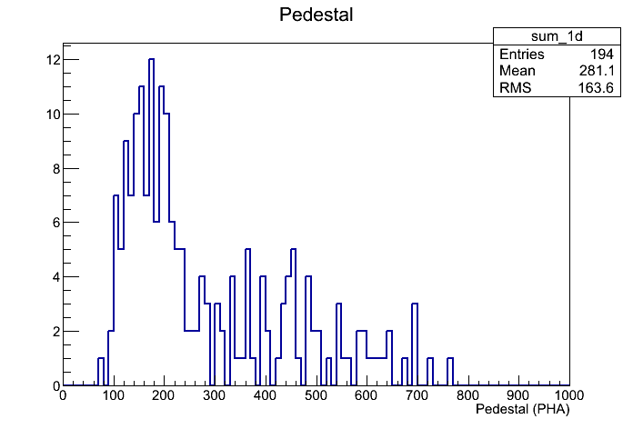
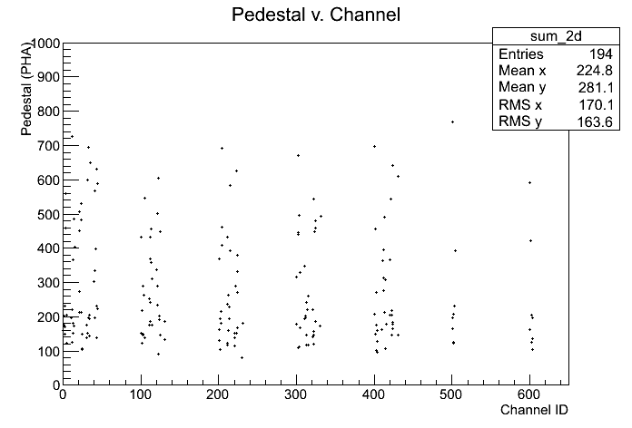
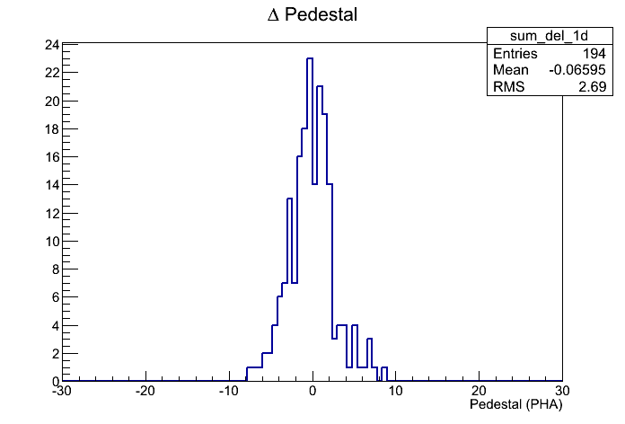
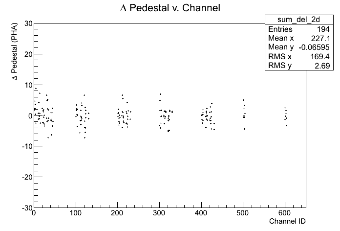

ACD_Ped Calibration r0765671178_ped
Input:
Files:
- Type: Digi. Path: root://glast-rdr.slac.stanford.edu//glast/Data/Flight/Level1/LPA/prod/5.9/digi/r0765671178_v001_digi.root
Time Span (MET seconds): 765671181.6719 - 765676837.0869
Triggers used: 10126
Use History
- stored at Wed Jun 24 20:55:03 2026
Output:
Summary Plots


Plots with respect to reference calibration


Reference Calibration
/sdf/group/fermi/ground/releases/monitor/ACD/FLIGHT/Ped/081208/r0250381744_ped.xml
Files:
- Type: Digi. Path: root://glast-rdr.slac.stanford.edu//glast/Data/Flight/Level1/LPA/prod/1.69/digi/r0250381744_v000_digi.root
Time Span (MET seconds): 250381746.9232 - 250386345.0845
Triggers used: 8214
Comments
- Report made at 2026-06-25 03:53:28 UTC by user abhishek
- Data from Mission week 878